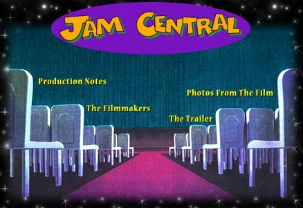

You've made it: Jam Central Station, the central depository for all things Space Jam. From the best seats in the house, you can peruse the production notes, find out about the filmmakers, check out the theatrical trailer, and look at a bunch of photos from the film.